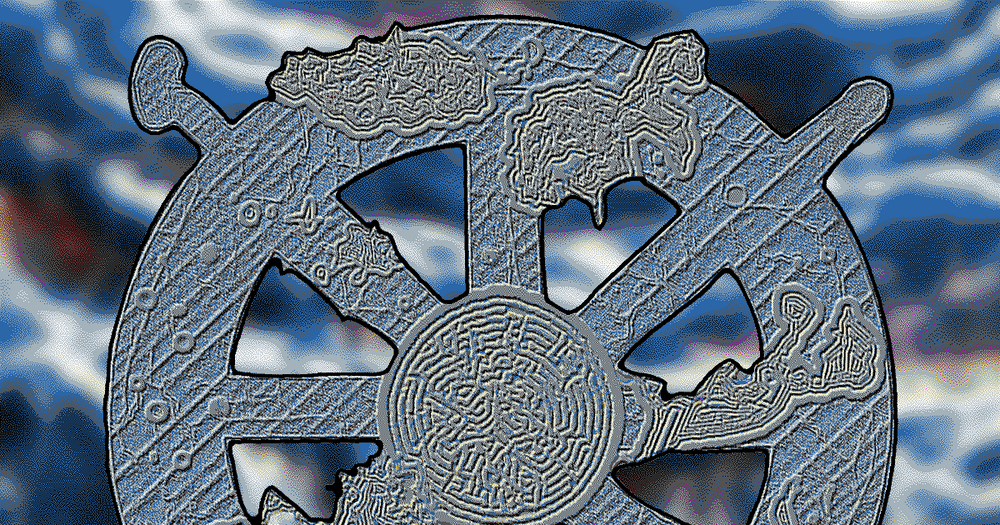

The Protocol Institute · Protocols for Business Practice
Durable AI Adoption
A practical guide to adopting AI across your organization: case studies, maturity levels, and lessons from the Protocol Institute and other organizations.